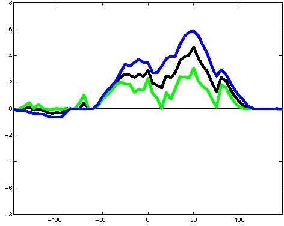

K562 Activating DNase unmatched - State 20:ReprD (n=18)
K562 Activating DNase unmatched - State 20:ReprD (n=18)
[
See group descriptions
]

; picked in Huvec (state 5:Enh, DNase); unmatched; chr7:73,476,489-73,476,783 (295bp)")
; picked in HepG2 (state 5:Enh, DNase); unmatched; chr3:32,842,029-32,842,323 (295bp)")
; picked in H1hesc (state 5:Enh, DNase); unmatched; chr16:11,734,389-11,734,683 (295bp)")
; picked in Huvec (state 5:Enh, DNase); unmatched; chr7:132,095,149-132,095,443 (295bp)")
; picked in H1hesc (state 12:CtcfO, DNase); unmatched; chr7:73,393,449-73,393,743 (295bp)")
; picked in H1hesc (state 4:PromP, DNase); unmatched; chr6:168,609,609-168,609,903 (295bp)")
; picked in Huvec (state 5:Enh, DNase); unmatched; chr3:197,121,569-197,121,863 (295bp)")
; picked in HepG2 (state 12:CtcfO, DNase); unmatched; chr11:133,800,629-133,800,923 (295bp)")